TRABAJO EN GRUPO
Cálculo de la Dimensión Fractal mediante Box Counting
Realizado por
Andrés Carrasco Garzón,
con DNI, 26527416K
Jaime Emilio Sala Mascort,
con DNI, 30256459M
Dirigido por
Juan Vicente Gutiérrez Santacreu
Departamento de Matemática Aplicada I
Introducción
En este trabajo se trata el cálculo de la dimensión fractal de imágenes mediante el algoritmo de Box Counting.
Para ello, se utilizará un algoritmo que procese la imagen introducida por el usuario, detecte los bordes de dicha imagen, y calcule su dimensión fractal mediante nuestra implementación del algoritmo de Box Counting.
La implementación del proyecto se realizará mediante un ecosistema de HTML5, CSS y JavaScript, que nos ofrecen realizar un entregable multiplaforma que podrá ser usado utilizando un servidor local.
Además, el resultado se publicará en un repositorio de GitHub, y se usará GitHub Pages para que sea abierto al público, pudiéndose ejecutar el proyecto sin necesidad de realizar la instalación, ni ningún tipo de configuración.
Conceptos teóricos
Antes de tratar el algoritmo de “Box Counting”, es necesario explicar los conceptos teóricos en los que se basa este proyecto.
Fractales
Un fractal es una figura geométrica compleja, que a pesar de que nos acerquemos a ella no se simplifica. Aunque no hay una definición universal, si podemos saber algunas de sus propiedades como la propiedad de autosimilitud, y la repetición de formas y figuras en distintas escalas y un tipo de “dimensión”, concepto que ampliaremos posteriormente.
Los fractales se dan en lugares inesperados en la naturalezas, desde la agrupación de las algas de las marismas de San Fernando(Cádiz), Figura 2.1, a gran escala, hasta los vasos sanguíneos de una persona, Figura 2.2, y conociendo un poco sobre ellos pueden tener una aplicaciones asombrosas.
Además de cualquier concepto que podamos imaginar, como la alfombra de Sierpinski, Figura 2.7, donde a raíz de un cuadrado, vamos quitando progresivamente segmento cuadrados de un tercio del lado del cuadrado.
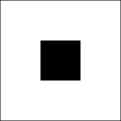 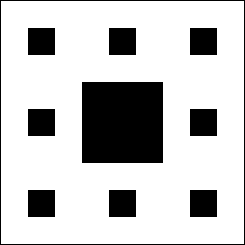
Dimensión fractal
De forma opuesta a la idea de saber que es un fractal, que de forma intuitiva los podemos encontrar, con el concepto de la dimensión fractal pasa lo contrario. Todo el mundo sabe las tres dimensiones que ocupamos día a día, de igual forma nos podemos imaginar objetos en dos dimensiones y en una dimensión, teniendo un plano y un punto respectivamente, sin embargo, no todo el mundo sabe que relación tiene ese número, en principio entero, con el mundo real. Para ello vamos a establecer unas condiciones previas:
-
Se dice que C = {Ci}i ∈ I con Ci perteneciente a ℝ2, es un recubrimiento de A si para x ∈ A ∃Ci ∈ C tal que x ∈ Ci. Ver Figura 2.8

Recubrimiento finito de la Curva -
El recubrimiento se dice finito si cualquier cardinal I es menos que infinito
-
Se dice que un recubrimiento D = {Dj}j ∈ I es mas fino que C = {Ci}i ∈ I si para todo Ci existe un Dj tal que Dj pertenece a Ci. Ver Figura 2.9

Recubrimiento más fino de la Curva -
El orden de un recubrimiento C = {Ci}i ∈ I es el número máximo de intersección que tiene los puntos de A, para x ∈ A ∃Ci tal que x ∈ Ci
Dicho esto, podemos definir la dimensión topológica como el mínimo valor de n-1 para el que todo recubrimiento admite un recubrimiento más fino de orden no superior a n. También relacionado con el exponente del factor de escalado en la dimensión.
medida(K ⋅ C) = Kdim(C) ⋅ medida(C)
Cálculo de la dimensión fractal
Despejando la fórmula anterior, podemos hallar la dimensión de cualquier conjunto C, además podemos saber que una dimensión no tiene por qué ser un número entero, y la razón es que la dimensión es una forma de saber como un conjunto cubre el espacio disponible.
Sin embargo, no podemos conocer con seguridad todos los conjuntos C, ya que pueden venir de la naturaleza, y no podamos conocer todos los datos del conjunto, por tanto hay que hallar otra manera de calcular esta dimensión.
Para ello, usaremos el algoritmo de Box Counting.
Algoritmo de Box Counting
El algoritmo de Box Counting, o Conteo de Cajas, se trata de un método para dividir los patrones complejos de un conjunto de datos, de forma que podamos ir analizando los datos a distinta escala.
Para ello, definimos primero una cuadrícula sobre la imagen a tratar. Esta cuadrícula será tan fina como determine ϵ, que nos dirá como de fina es la escala.
Posteriormente, debemos de contar todas las celdas donde la imagen tenga un borde. Si, por ejemplo, tenemos un disco, nos debe indicar todo el borde de dicho disco.
Iremos anotando los resultados y anotándolos junto al ϵ de la rejilla, e iremos avanzando hasta que los datos o la capacidad computacional de nuestro dispositivo lo permita.
De esta forma, tendremos una tabla de resultados que podremos interpretar de la siguiente forma:
El eje X representa las escalas utilizadas, y el eje Y representa el número de celdas que tocan el borde de la figura para la escala asociada.
Si representamos los datos, obtendremos una curva que representa el crecimiento del número de celdas para las escalas, y este crecimiento es la dimensión fractal de la figura.
Para facilitar los cálculos posteriores, los datos obtenidos los representaremos en forma logarítmica (en ambos ejes), ya que, de esta manera, la curva pasará a ser una recta de regresión lineal.
Con la recta podemos obtener fácilmente su pendiente, que nos indica el crecimiento de ésta, y, por lo tanto, la dimensión fractal de la figura.
Implementación
En primer lugar, hemos hecho uso de una librería externa llamada “JS Canny Edge Detector” para la detección de bordes, de forma que se pueda obtener el borde de cualquier imagen dada, ajustando una serie de parámetros.
Seguidamente, nos llega la imagen tratada, ya sea por nosotros o bien por el algoritmo de detección de bordes implementado en la librería.
Para implementar nuestro algoritmo, hemos optado por una estrategia recursiva que divida cada cuadrante de la rejilla actual en otros cuatro cuadrantes más, sucesivamente, de forma que nuestra rejilla se hace cada vez más fina, hasta llegar al límite de la imagen proporcionada.
El límite de precisión del algoritmo viene dado por el lado menor de la imagen divido entre la mayor potencia de dos cuyo resultado sea mayor a 2, esto es debido a que la estrategia que se ha optado para establecer un borde se determina mediante una matriz mínima de 2x2 y esta disponga de al menos un píxel blanco y otro negro. Sin embargo, dependiendo de la potencia computacional de nuestro ordenador, puede que no sea posible introducir imágenes demasiado grandes.
Una vez obtenidos el número de celdas que tocan el borde, y las escalas, se aplica el logaritmo a todos los datos, y se calcula la recta que minimiza el error cuadrático medio de todos los puntos respecto de la recta.
Finalmente, se obtiene la pendiente de la recta, que representa la dimensión fractal de la imagen.
También, para poder mostrar las celdas que tocan el borde de la imagen, se almacena en una lista aquellas celdas que se contaron durante el algoritmo de Box Counting. Al pulsar el botón que muestra las celdas, simplemente se dibujan según la escala deseada en un “lienzo” que solapa a la imagen, que tiene sus mismas dimensiones, y que es ligeramente transparente.
Ejemplo de uso
Para usar la aplicación se puede acceder a ella en su página de GitHub, o descargándola y ejecutándola en un servidor local.
Una manera fácil de usarla en un servidor local, sería haciendo uso de Visual Code Studio y mediante la extensión de Live Server ejecutarla.
La página de “Inicio” contiene toda la funcionalidad de la aplicación, mientras que las páginas “Memoria” y “Sobre Nosotros” sólo contiene información acerca de los autores y el proyecto.
En la página de inicio, debemos de cargar una imagen de nuestro dispositivo pulsando el botón “Elige una imagen”.
Una vez seleccionada, aparecerán dos campos de entrada de texto. Estos campos de texto deben ser números decimales comprendidos entre 0 y 1, que representan el umbral inferior y superior para la detección de bordes en la imagen.
Por ejemplo, para el triángulo de Sierpinski, en color, con parámetros 0.01 y 0.01, pulsamos el botón “Encontrar los bordes” y, tras un tiempo de preprocesamiento, se nos mostrará los bordes de la imagen introducida.
Para obtener mejores resultados, es necesario ajustar los parámetros de umbral inferior y superior.
Una vez que ya tenemos los bordes, simplemente debemos pulsar el botón “Calcular dimensión fractal”, que ejecutará el algoritmo de Box Counting, y nos mostrará la dimensión fractal asociada a la imagen.
También es posible visualizar las celdas que tocan los bordes de la imagen, para las distintas escalas, pulsando el botón “Mostrar rejilla profundidad”. Podemos ocultarlas pulsando el botón “Ocultar rejilla”.
Por último, si ya disponemos de una imagen preprocesada, es decir, que ya muestra los bordes de la figura, podemos cargarla directamente pulsando el botón “Cargar directamente”. En este caso, no es necesario ajustar los parámetros de umbral.
Pruebas
Para comprobar que el algoritmo funciona de manera adecuada, y da resultados aceptables, hemos realizado algunas pruebas sobre figuras fractales bien conocidas, y sobre una imagen de la naturaleza.
Conjunto de Mandelbrot
La primera figura que hemos analizado es el famoso conjunto de Mandelbrot, eligiendo una imagen en color con dimensiones 1600x1200.
Hemos procesado la imagen con parámetros 0.0868, tanto para el umbral inferior como superior, y hemos obtenido que la dimensión fractal asociada a dicha imagen es 1.9990. La dimensión fractal real es 2, con una diferencia de 0.01 respecto de nuestro resultado.
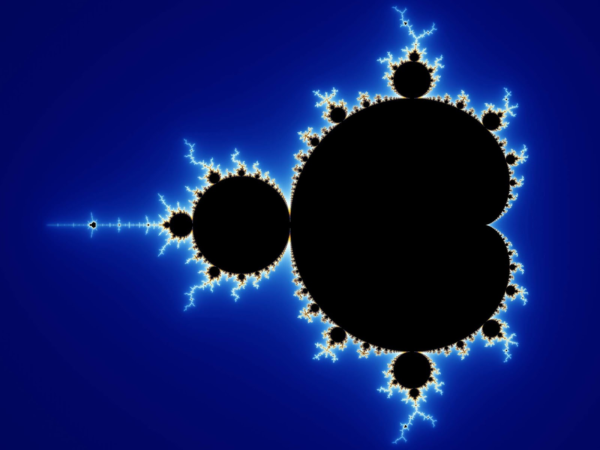 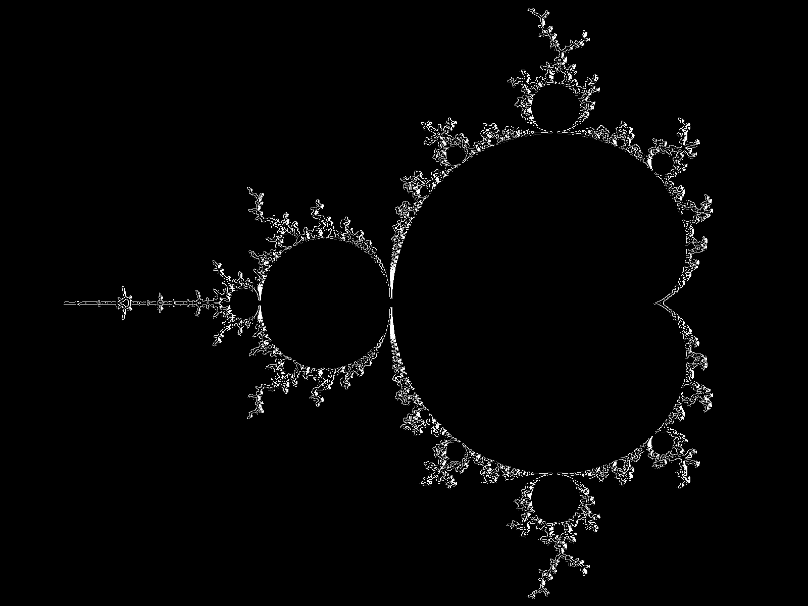
Triángulo de Sierpinski
La segunda figura que hemos analizado es el triángulo de Sierpinski, eligiendo una imagen en color con dimensiones 1024x887. Hemos procesado la imagen con parámetros 0.01, tanto para el umbral inferior como superior, y hemos obtenido que la dimensión fractal asociada a dicha imagen es 1.5558. La dimensión fractal real es 1.5849, con una diferencia de 0.0291 respecto de nuestro resultado.
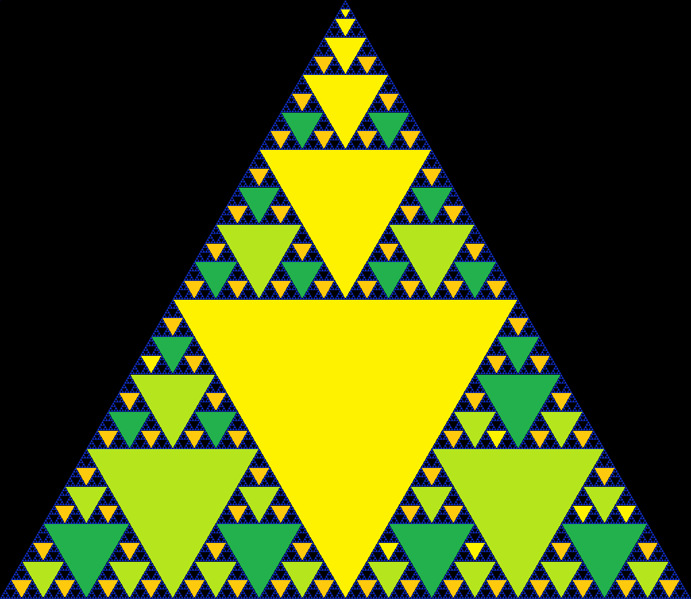 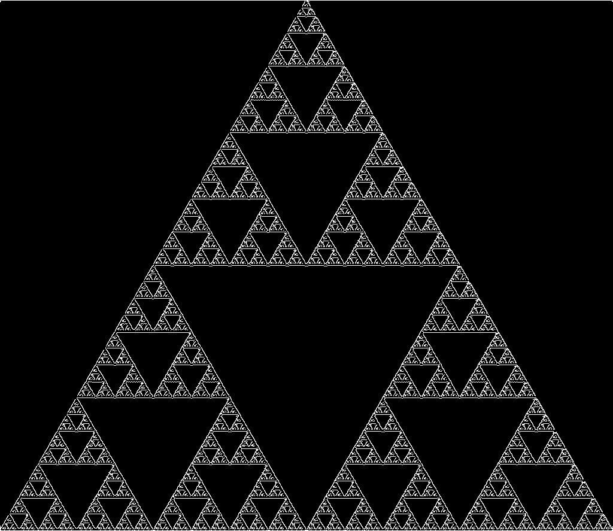
Curva de Koch
La tercera figura que hemos analizado es la curva de Koch, eligiendo una imagen, que no necesita de preprocesamiento, con dimensiones 12938x3750.
Dado que no es necesario detectar los bordes de la imagen, ya que ya los bordes ya están procesados, sólo debemos ejecutar el algoritmo de Box Counting, obteniendo que la dimensión fractal asociada a dicha imagen es 1.2851. La dimensión fractal real es 1.2618, con una diferencia de 0.0192 respecto de nuestro resultado.
Marismas de San Fernando
Por último, la cuarta imagen que hemos analizado es una fotografía de las Marismas de San Fernando, eligiendo una imagen en color con dimensiones 400x266.
Hemos procesado la imagen con parámetros 0.195 para el umbral inferior, y 0.22 para el umbral superior, obteniendo que la dimensión fractal asociada a dicha imagen es 1.9831.
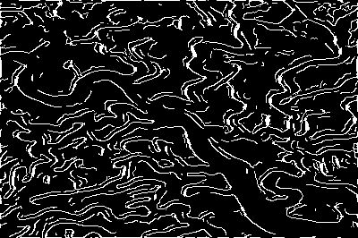
Aplicaciones reales
Gracias a que los fractales cumplen con el principio matemático de autosimilitud, si se identifica una estructura esencial en la naturaleza y se aplican los principios de la geometría fractal para descomponerla, se pueden hacer predicciones sobre cómo se comportará dicha estructura en el futuro. Este importante principio nos proporciona una gran cantidad de aplicaciones prácticas.
Una de la más destacada es la detección de células cancerígenas a través del conocimiento de la dimensión fractal de los vasos capilares, ya que es un factor uniforme en todo nuestro cuerpos, sin embargo, la aparición de células cancerosas altera este factor, ya que debido a su aparición se crean nuevos capilares en la dirección.
Se están haciendo estudios gracias a la dimensión fractal en el ámbito de la medicina para detectar biomarcadores de la degeneración macular, y otras muchas enfermedades como la osteoporosis, parkinson, alzheimer.
Otras que planteamos desde el grupo, podría intervenir en el ámbito urbanístico, debido a que la distribución de las ciudades depende de muchos factores, pero se podría hacer un estudio para ver la relación de la dimensión fractal de la ciudad con distintos indicadores que ya existen, como ruido, riqueza, antigüedad, entre otras.
Conclusiones
Aunque pueda parecer que el algoritmo de Box Counting es la solución perfecta para calcular dimensiones fractales, está lejos de ser la realidad, ya que también presenta varios problemas.
El primero de todos, y el más notable, es que el algoritmo puede ser exhaustivo, ya que conforme aumentamos el número de celdas (hacemos más fina la rejilla), es necesario realizar más cálculos.
El número de cálculos puede llegar a ser tan grande, que sólo sea posible realizarlo con un gran poder computacional, por lo que obtener una gran precisión en la obtención de la dimensión fractal no está al alcance de todo el mundo.
Otro problema, aún más grave que el anterior y más sutil, es que la imagen elegida influirá notablemente en el resultado obtenido. Puede influir negativamente de dos maneras: Que la calidad de la imagen sea mala, y que tenga dimensiones demasiado pequeñas.
Si la calidad de la imagen es mala, probablemente habrá píxeles que se verán borrosos y que complicarán la tarea de distinguir el borde de la imagen, por lo que puede que el algoritmo detecte, accidentalmente, píxeles que ni si quieran forman parte de éste.
Por ejemplo, para la misma figura, pero distinta calidad, se obtienen los siguientes resultados con los mismos parámetros:
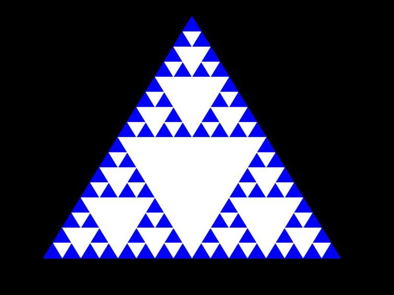 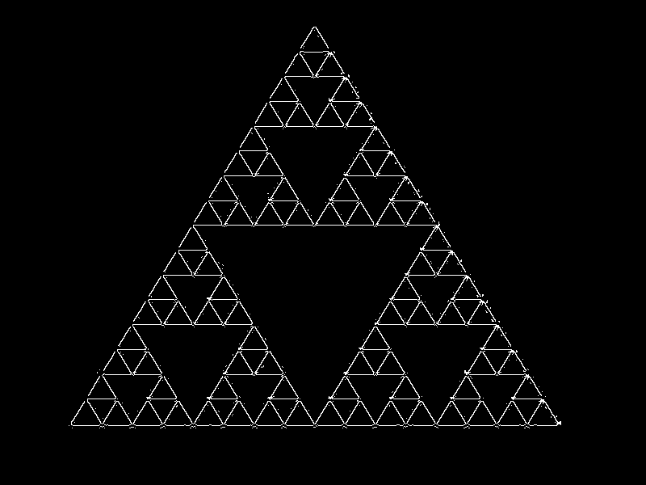
 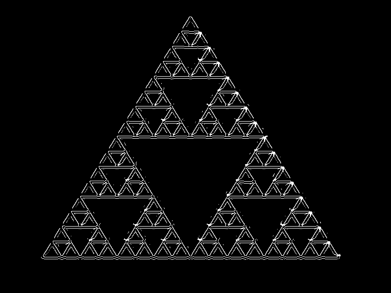
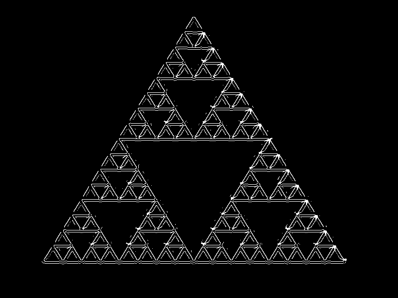
Por otro lado, si las dimensiones son demasiado pequeñas, no será posible aumentar demasiado el número de celdas, es decir, hacer más fina la rejilla. Esto se debe a que llegará un punto en el que habrá más celdas que píxeles, y, por lo tanto, habría celdas que serían más pequeñas que un píxel, que no es posible.
Sin embargo, a pesar de estos problemas, se pueden obtener resultados lo suficientemente buenos como para obtener una primera idea de cuál puede ser la dimensión fractal de una figura. Por lo tanto, más que una solución definitiva, es una herramienta que “rápidamente” nos puede aportar información sobre una figura difícil de analizar manualmente.
También es interesante como el algoritmo puede llevarse a otros campos, más allá de las matemáticas, aunque desde nuestro ámbito y experiencia salen de nuestros conocimientos, el potencial que se está encontrando en la medicina y el control medioambiental es muy grande ya que detectar biomarcadores es el primer paso para la solución de grande problemas.
Bibliografía
- [1] Fractal dimension - box counting method, . URL http://fractalfoundation.org/ OFC/OFC-10-5.html.
- [2] Fractals are typically not self-similar, . URL https://youtu.be/gB9n2gHsHN4.
- [3] Recta de regresión de y sobre xr, . URL https://www.youtube.com/watch?v=wtjfwq1FbzA&abchannel=RubenSebastian.
- [4] Héctor Garrido. Armonía fractal de do ̃nana y las marismas, 2020. URL http://armoniafractal.blogspot.com/.
- [5] Kathleen T. Alligood, Tim D.Sauer y James A. Yorke. Chaos. an introduction to dynamical systems. 1996.
- [6] J.Navas, F.J. Esteban, J.Ruíz y J.M. Quesadn. La dimensi ́on fractal como metodo de diagnóstico del enfermedades neurodegenerativas., 2015. URL http://ucua.ujaen.es/jnavas/web_modelos/curso14_15/presentacion%20dimension%20sevilla%2015.pdf.
- [7] Petar Slovic y Thad Rasmussen. Js canny edge detector, 2020. URL https://github.com/petarjs/js-canny-edge-detector.